Results
Error: importing CovidData into Main conflicts with an existing identifier
Error: importing CovidRt into Main conflicts with an existing identifier
Here, we will allow the initial and time varying mean of $R_{s,t}$ to
depend on covariates. We will include only the policy related covariates
and the non time-varying ones.
In computing $\Delta \log \Delta C$, we take backward differences of
length 7, so
This means that our time $t$ outcome is reflects the average
reproductive number from time $t-7$ to $t$. For $X_{s,t}$ we use the
moving average of the policy indicator variables from time $t-L-7$ to
$t-L$, and we try a few different values of $L$.
reestimate=true
xvarsets = [ vcat(x0vars,
Symbol("Stay.at.home..shelter.in.place_lagged"),
Symbol("Date.closed.K.12.schools_lagged"),
Symbol("Closed.movie.theaters_lagged"),
Symbol("Closed.non.essential.businesses_lagged"),
Symbol("Closed.restaurants.except.take.out_lagged")) ,
vcat(x0vars,
Symbol("Stay.at.home..shelter.in.place_lagged")) ]
rlo=-1
rhi=1.1
states_to_plot = ["New York", "New Jersey","Massachusetts","California",
"Georgia","Illinois","Michigan",
"Ohio","Wisconsin","Washington"]
warmup = default_warmup_stages(local_optimization=FindLocalOptimum(1e-4, 100),
stepsize_search=nothing,
init_steps=100, middle_steps=100,
terminating_steps=2*100,
doubling_stages=4, M=Symmetric)
for L in [7, 10, 14]
for xvars in xvarsets
K = length(xvars)
priors = (γ = truncated(Normal(1/7,1/7), 1/28, 1/1),
σR0 = truncated(Normal(1, 3), 0, Inf),
α0 = MvNormal(zeros(length(x0vars)), sqrt(10)), #truncated(Normal(1, 3), 0, Inf),
σR = truncated(Normal(0.25,1),0,Inf),
σk = truncated(Normal(0.1, 5), 0, Inf),
ρ = Uniform(rlo, rhi),
α = MvNormal(zeros(K), sqrt(10))
)
estfile = "rt_onlyp_$(L)_x$(K).jld2"
w = vcat(ones(7+1), zeros(2*L+7))
sort!(sdf, (:state, :date))
for v in pvars
newv = Symbol(string(v)*"_lagged")
sdf[!,newv] = Float64.(sdf[!,v])
for gdf in groupby(sdf, :state)
gdf[:, newv] .= CovidRt.smooth(gdf[:,v], w=w)
end
end
mdl = CovidRt.RtModel(sdf, Symbol("cases.nyt"), xvars, x0vars,
priors; L1=7, L2=7,
time0=r->(r[Symbol("cases.nyt")].>=5))
if !isfile(estfile) || reestimate
post = CovidRt.mcmc(mdl; iterations=2000, warmup=warmup)
@save estfile post
end
@load estfile post
cc = CovidRt.MCMCChain(post, xvars, x0vars)
println("## Policies lagged by = $(L)")
println()
display(plot(cc))
println(latexify(DataFrame(describe(cc)[1]), env=:mdtable, latex=false, fmt=x->round(x, sigdigits=3)))
println(latexify(DataFrame(describe(cc)[2]), env=:mdtable, latex=false, fmt=x->round(x, sigdigits=3)))
states = mdl.id
S = length(states_to_plot)
figs = fill(plot(), S)
for (i,st) in enumerate(states_to_plot)
s = findfirst(states.==st)
figr = CovidRt.plotpostr(mdl.t[s],mdl.dlogk[s],post, mdl.X[s], mdl.X0[s])
l = @layout [a{.1h}; grid(1,1)]
figs[i] = plot(plot(annotation=(0.5,0.5, st*", L=$(L) nx=$(K)"), framestyle = :none),
plot(figr, ylim=(-1,15)), layout=l)
display(figs[i])
end
end
end
Policies lagged by = 7
| parameters |
mean |
std |
naive_se |
mcse |
ess |
r_hat |
| γ |
0.0392 |
0.00349 |
7.81e-5 |
0.000202 |
208.0 |
1.0 |
| σR0 |
2.56 |
0.337 |
0.00754 |
0.0231 |
197.0 |
1.0 |
| α0(constant) |
-0.106 |
2.63 |
0.0588 |
0.18 |
221.0 |
1.0 |
| α0(logpopdens) |
-0.18 |
0.336 |
0.00751 |
0.0218 |
185.0 |
1.01 |
| α0(Percent Unemployed 2018 ) |
0.267 |
0.583 |
0.013 |
0.0277 |
290.0 |
1.0 |
| α0(Percent living under the federal poverty line 2018 ) |
-0.171 |
0.229 |
0.00512 |
0.0148 |
220.0 |
1.0 |
| α0(Percent at risk for serious illness due to COVID) |
0.154 |
0.0978 |
0.00219 |
0.00804 |
189.0 |
1.0 |
| σR |
0.733 |
0.0587 |
0.00131 |
0.00342 |
203.0 |
1.0 |
| σk |
0.000876 |
0.000694 |
1.55e-5 |
3.95e-5 |
287.0 |
1.0 |
| ρ |
0.916 |
0.00869 |
0.000194 |
0.000399 |
365.0 |
1.0 |
| α(constant) |
3.55 |
1.68 |
0.0376 |
0.0708 |
301.0 |
1.0 |
| α(logpopdens) |
0.426 |
0.153 |
0.00343 |
0.00748 |
333.0 |
1.0 |
| α(Percent Unemployed 2018 ) |
0.0755 |
0.289 |
0.00645 |
0.022 |
199.0 |
1.0 |
| α(Percent living under the federal poverty line 2018 ) |
-0.0238 |
0.11 |
0.00245 |
0.00677 |
201.0 |
1.0 |
| α(Percent at risk for serious illness due to COVID) |
-0.0197 |
0.055 |
0.00123 |
0.00201 |
285.0 |
1.0 |
| α(Stay at home shelter in place lagged) |
-0.888 |
0.374 |
0.00836 |
0.0313 |
166.0 |
1.0 |
| α(Date closed K 12 schools lagged) |
-1.31 |
0.382 |
0.00855 |
0.0213 |
245.0 |
1.0 |
| α(Closed movie theaters lagged) |
-0.54 |
0.426 |
0.00952 |
0.0264 |
225.0 |
1.01 |
| α(Closed non essential businesses lagged) |
-0.751 |
0.362 |
0.0081 |
0.0231 |
227.0 |
1.0 |
| α(Closed restaurants except take out lagged) |
-0.581 |
0.459 |
0.0103 |
0.0276 |
263.0 |
1.02 |
| parameters |
2.5% |
25.0% |
50.0% |
75.0% |
97.5% |
| γ |
0.0358 |
0.0367 |
0.0381 |
0.0403 |
0.0485 |
| σR0 |
1.96 |
2.33 |
2.55 |
2.78 |
3.26 |
| α0(constant) |
-5.16 |
-1.98 |
-0.0118 |
1.63 |
5.19 |
| α0(logpopdens) |
-0.886 |
-0.387 |
-0.171 |
0.0323 |
0.47 |
| α0(Percent Unemployed 2018 ) |
-0.897 |
-0.119 |
0.264 |
0.655 |
1.41 |
| α0(Percent living under the federal poverty line 2018 ) |
-0.622 |
-0.319 |
-0.167 |
-0.0268 |
0.297 |
| α0(Percent at risk for serious illness due to COVID) |
-0.0339 |
0.0882 |
0.151 |
0.218 |
0.359 |
| σR |
0.583 |
0.704 |
0.747 |
0.777 |
0.81 |
| σk |
1.83e-5 |
0.000315 |
0.00073 |
0.00129 |
0.00255 |
| ρ |
0.899 |
0.91 |
0.916 |
0.922 |
0.932 |
| α(constant) |
0.36 |
2.33 |
3.54 |
4.72 |
6.74 |
| α(logpopdens) |
0.123 |
0.318 |
0.43 |
0.535 |
0.71 |
| α(Percent Unemployed 2018 ) |
-0.45 |
-0.141 |
0.0725 |
0.273 |
0.666 |
| α(Percent living under the federal poverty line 2018 ) |
-0.261 |
-0.0953 |
-0.0191 |
0.0528 |
0.18 |
| α(Percent at risk for serious illness due to COVID) |
-0.128 |
-0.0567 |
-0.0196 |
0.0204 |
0.0874 |
| α(Stay at home shelter in place lagged) |
-1.61 |
-1.14 |
-0.876 |
-0.622 |
-0.184 |
| α(Date closed K 12 schools lagged) |
-2.05 |
-1.56 |
-1.31 |
-1.05 |
-0.488 |
| α(Closed movie theaters lagged) |
-1.47 |
-0.802 |
-0.53 |
-0.252 |
0.263 |
| α(Closed non essential businesses lagged) |
-1.43 |
-0.996 |
-0.757 |
-0.51 |
-0.0455 |
| α(Closed restaurants except take out lagged) |
-1.43 |
-0.911 |
-0.575 |
-0.25 |
0.327 |
Policies lagged by = 7
| parameters |
mean |
std |
naive_se |
mcse |
ess |
r_hat |
| γ |
0.0399 |
0.00424 |
9.48e-5 |
0.000295 |
183.0 |
1.0 |
| σR0 |
2.61 |
0.396 |
0.00885 |
0.0271 |
209.0 |
1.0 |
| α0(constant) |
-0.0327 |
2.67 |
0.0596 |
0.168 |
204.0 |
1.02 |
| α0(logpopdens) |
-0.117 |
0.345 |
0.00772 |
0.0319 |
124.0 |
1.01 |
| α0(Percent Unemployed 2018 ) |
0.632 |
0.596 |
0.0133 |
0.039 |
285.0 |
1.02 |
| α0(Percent living under the federal poverty line 2018 ) |
-0.274 |
0.243 |
0.00543 |
0.0112 |
297.0 |
1.0 |
| α0(Percent at risk for serious illness due to COVID) |
0.216 |
0.102 |
0.00228 |
0.00621 |
214.0 |
1.01 |
| σR |
0.727 |
0.0676 |
0.00151 |
0.00491 |
175.0 |
1.0 |
| σk |
0.000934 |
0.000723 |
1.62e-5 |
4.28e-5 |
202.0 |
1.02 |
| ρ |
0.935 |
0.00623 |
0.000139 |
0.000483 |
218.0 |
1.0 |
| α(constant) |
3.51 |
1.9 |
0.0424 |
0.149 |
184.0 |
1.0 |
| α(logpopdens) |
0.464 |
0.202 |
0.00452 |
0.0177 |
125.0 |
1.02 |
| α(Percent Unemployed 2018 ) |
-0.296 |
0.329 |
0.00735 |
0.0179 |
274.0 |
1.01 |
| α(Percent living under the federal poverty line 2018 ) |
0.0656 |
0.14 |
0.00313 |
0.00932 |
269.0 |
1.0 |
| α(Percent at risk for serious illness due to COVID) |
-0.0925 |
0.0657 |
0.00147 |
0.00546 |
177.0 |
1.0 |
| α(Stay at home shelter in place lagged) |
-1.09 |
0.325 |
0.00727 |
0.0291 |
157.0 |
1.0 |
| parameters |
2.5% |
25.0% |
50.0% |
75.0% |
97.5% |
| γ |
0.0358 |
0.0369 |
0.0386 |
0.0415 |
0.0511 |
| σR0 |
1.88 |
2.34 |
2.59 |
2.85 |
3.55 |
| α0(constant) |
-5.15 |
-1.9 |
-0.0748 |
1.76 |
5.3 |
| α0(logpopdens) |
-0.814 |
-0.35 |
-0.13 |
0.126 |
0.536 |
| α0(Percent Unemployed 2018 ) |
-0.59 |
0.238 |
0.654 |
1.04 |
1.76 |
| α0(Percent living under the federal poverty line 2018 ) |
-0.729 |
-0.445 |
-0.283 |
-0.0983 |
0.202 |
| α0(Percent at risk for serious illness due to COVID) |
0.0199 |
0.146 |
0.215 |
0.288 |
0.413 |
| σR |
0.562 |
0.691 |
0.744 |
0.779 |
0.813 |
| σk |
5.5e-5 |
0.000354 |
0.000741 |
0.00139 |
0.00264 |
| ρ |
0.922 |
0.931 |
0.935 |
0.939 |
0.947 |
| α(constant) |
-0.457 |
2.28 |
3.56 |
4.81 |
6.89 |
| α(logpopdens) |
0.0884 |
0.329 |
0.454 |
0.597 |
0.9 |
| α(Percent Unemployed 2018 ) |
-0.929 |
-0.501 |
-0.288 |
-0.0867 |
0.342 |
| α(Percent living under the federal poverty line 2018 ) |
-0.205 |
-0.023 |
0.066 |
0.151 |
0.354 |
| α(Percent at risk for serious illness due to COVID) |
-0.225 |
-0.134 |
-0.0909 |
-0.0497 |
0.0402 |
| α(Stay at home shelter in place lagged) |
-1.78 |
-1.33 |
-1.07 |
-0.855 |
-0.521 |
Policies lagged by = 10
| parameters |
mean |
std |
naive_se |
mcse |
ess |
r_hat |
| γ |
0.0386 |
0.00313 |
7.0e-5 |
0.000202 |
212.0 |
1.01 |
| σR0 |
2.54 |
0.306 |
0.00685 |
0.0173 |
216.0 |
1.0 |
| α0(constant) |
-0.422 |
2.76 |
0.0618 |
0.242 |
147.0 |
1.01 |
| α0(logpopdens) |
-0.0443 |
0.348 |
0.00778 |
0.026 |
122.0 |
1.0 |
| α0(Percent Unemployed 2018 ) |
0.207 |
0.569 |
0.0127 |
0.0562 |
111.0 |
1.0 |
| α0(Percent living under the federal poverty line 2018 ) |
-0.163 |
0.224 |
0.00502 |
0.0203 |
126.0 |
1.01 |
| α0(Percent at risk for serious illness due to COVID) |
0.145 |
0.0995 |
0.00223 |
0.00776 |
195.0 |
1.0 |
| σR |
0.74 |
0.0536 |
0.0012 |
0.00354 |
196.0 |
1.01 |
| σk |
0.000898 |
0.000686 |
1.53e-5 |
6.0e-5 |
153.0 |
1.0 |
| ρ |
0.906 |
0.00893 |
0.0002 |
0.000724 |
199.0 |
1.01 |
| α(constant) |
3.91 |
1.69 |
0.0378 |
0.123 |
151.0 |
1.01 |
| α(logpopdens) |
0.405 |
0.134 |
0.003 |
0.00914 |
149.0 |
1.0 |
| α(Percent Unemployed 2018 ) |
0.00918 |
0.276 |
0.00618 |
0.0305 |
79.8 |
1.0 |
| α(Percent living under the federal poverty line 2018 ) |
-0.00514 |
0.103 |
0.00231 |
0.00962 |
85.0 |
1.01 |
| α(Percent at risk for serious illness due to COVID) |
-0.0173 |
0.0536 |
0.0012 |
0.00352 |
161.0 |
1.02 |
| α(Stay at home shelter in place lagged) |
-0.703 |
0.322 |
0.0072 |
0.0181 |
194.0 |
1.0 |
| α(Date closed K 12 schools lagged) |
-1.52 |
0.383 |
0.00857 |
0.0344 |
195.0 |
1.0 |
| α(Closed movie theaters lagged) |
-0.411 |
0.396 |
0.00885 |
0.0306 |
186.0 |
1.0 |
| α(Closed non essential businesses lagged) |
-0.695 |
0.368 |
0.00822 |
0.0314 |
172.0 |
1.0 |
| α(Closed restaurants except take out lagged) |
-1.06 |
0.426 |
0.00953 |
0.0288 |
202.0 |
1.0 |
| parameters |
2.5% |
25.0% |
50.0% |
75.0% |
97.5% |
| γ |
0.0358 |
0.0364 |
0.0375 |
0.0395 |
0.0469 |
| σR0 |
1.97 |
2.34 |
2.52 |
2.74 |
3.18 |
| α0(constant) |
-6.31 |
-2.2 |
-0.36 |
1.42 |
4.83 |
| α0(logpopdens) |
-0.746 |
-0.287 |
-0.0227 |
0.19 |
0.622 |
| α0(Percent Unemployed 2018 ) |
-1.04 |
-0.159 |
0.232 |
0.613 |
1.22 |
| α0(Percent living under the federal poverty line 2018 ) |
-0.569 |
-0.319 |
-0.171 |
-0.00195 |
0.267 |
| α0(Percent at risk for serious illness due to COVID) |
-0.0478 |
0.0791 |
0.144 |
0.216 |
0.345 |
| σR |
0.606 |
0.718 |
0.755 |
0.779 |
0.804 |
| σk |
2.1e-7 |
0.000345 |
0.000758 |
0.00135 |
0.00245 |
| ρ |
0.889 |
0.899 |
0.906 |
0.912 |
0.923 |
| α(constant) |
0.261 |
2.89 |
3.9 |
4.98 |
7.13 |
| α(logpopdens) |
0.143 |
0.313 |
0.409 |
0.494 |
0.665 |
| α(Percent Unemployed 2018 ) |
-0.547 |
-0.177 |
0.0219 |
0.204 |
0.505 |
| α(Percent living under the federal poverty line 2018 ) |
-0.196 |
-0.0777 |
-0.00617 |
0.0658 |
0.193 |
| α(Percent at risk for serious illness due to COVID) |
-0.115 |
-0.0546 |
-0.0181 |
0.0171 |
0.0963 |
| α(Stay at home shelter in place lagged) |
-1.35 |
-0.918 |
-0.704 |
-0.484 |
-0.079 |
| α(Date closed K 12 schools lagged) |
-2.33 |
-1.77 |
-1.51 |
-1.26 |
-0.792 |
| α(Closed movie theaters lagged) |
-1.12 |
-0.7 |
-0.403 |
-0.127 |
0.333 |
| α(Closed non essential businesses lagged) |
-1.36 |
-0.962 |
-0.71 |
-0.448 |
0.0328 |
| α(Closed restaurants except take out lagged) |
-1.92 |
-1.35 |
-1.07 |
-0.784 |
-0.239 |
Policies lagged by = 10
| parameters |
mean |
std |
naive_se |
mcse |
ess |
r_hat |
| γ |
0.0404 |
0.00576 |
0.000129 |
0.000523 |
126.0 |
1.0 |
| σR0 |
2.5 |
0.381 |
0.00851 |
0.0375 |
105.0 |
1.01 |
| α0(constant) |
0.594 |
2.76 |
0.0617 |
0.231 |
169.0 |
1.0 |
| α0(logpopdens) |
-0.0783 |
0.304 |
0.00679 |
0.0228 |
215.0 |
1.01 |
| α0(Percent Unemployed 2018 ) |
0.65 |
0.583 |
0.013 |
0.0481 |
161.0 |
1.0 |
| α0(Percent living under the federal poverty line 2018 ) |
-0.257 |
0.264 |
0.0059 |
0.0221 |
154.0 |
1.0 |
| α0(Percent at risk for serious illness due to COVID) |
0.192 |
0.115 |
0.00258 |
0.0101 |
154.0 |
1.0 |
| σR |
0.723 |
0.0813 |
0.00182 |
0.00773 |
103.0 |
1.0 |
| σk |
0.000922 |
0.000652 |
1.46e-5 |
5.69e-5 |
98.8 |
1.0 |
| ρ |
0.936 |
0.00645 |
0.000144 |
0.000489 |
159.0 |
1.0 |
| α(constant) |
3.43 |
1.85 |
0.0413 |
0.128 |
250.0 |
1.0 |
| α(logpopdens) |
0.455 |
0.183 |
0.00409 |
0.0167 |
177.0 |
1.01 |
| α(Percent Unemployed 2018 ) |
-0.358 |
0.347 |
0.00776 |
0.0315 |
130.0 |
1.01 |
| α(Percent living under the federal poverty line 2018 ) |
0.0976 |
0.141 |
0.00316 |
0.0125 |
178.0 |
1.0 |
| α(Percent at risk for serious illness due to COVID) |
-0.0987 |
0.0687 |
0.00154 |
0.00609 |
156.0 |
1.0 |
| α(Stay at home shelter in place lagged) |
-0.923 |
0.34 |
0.0076 |
0.034 |
119.0 |
1.0 |
| parameters |
2.5% |
25.0% |
50.0% |
75.0% |
97.5% |
| γ |
0.0358 |
0.0367 |
0.0384 |
0.0418 |
0.0566 |
| σR0 |
1.69 |
2.26 |
2.52 |
2.76 |
3.22 |
| α0(constant) |
-4.85 |
-1.29 |
0.694 |
2.72 |
5.36 |
| α0(logpopdens) |
-0.692 |
-0.274 |
-0.0792 |
0.127 |
0.517 |
| α0(Percent Unemployed 2018 ) |
-0.403 |
0.257 |
0.658 |
1.07 |
1.69 |
| α0(Percent living under the federal poverty line 2018 ) |
-0.795 |
-0.434 |
-0.247 |
-0.0881 |
0.278 |
| α0(Percent at risk for serious illness due to COVID) |
-0.0461 |
0.119 |
0.192 |
0.264 |
0.432 |
| σR |
0.507 |
0.687 |
0.748 |
0.781 |
0.813 |
| σk |
7.22e-5 |
0.00039 |
0.000825 |
0.00129 |
0.00239 |
| ρ |
0.923 |
0.932 |
0.936 |
0.941 |
0.948 |
| α(constant) |
-0.0489 |
2.24 |
3.45 |
4.66 |
7.02 |
| α(logpopdens) |
0.0875 |
0.341 |
0.464 |
0.579 |
0.783 |
| α(Percent Unemployed 2018 ) |
-1.13 |
-0.575 |
-0.332 |
-0.11 |
0.218 |
| α(Percent living under the federal poverty line 2018 ) |
-0.183 |
0.00338 |
0.0983 |
0.189 |
0.374 |
| α(Percent at risk for serious illness due to COVID) |
-0.239 |
-0.147 |
-0.096 |
-0.0534 |
0.0328 |
| α(Stay at home shelter in place lagged) |
-1.69 |
-1.13 |
-0.916 |
-0.695 |
-0.276 |
Policies lagged by = 14
| parameters |
mean |
std |
naive_se |
mcse |
ess |
r_hat |
| γ |
0.0387 |
0.00316 |
7.06e-5 |
0.000231 |
62.6 |
1.0 |
| σR0 |
2.6 |
0.341 |
0.00763 |
0.0248 |
147.0 |
1.0 |
| α0(constant) |
-0.373 |
2.65 |
0.0593 |
0.165 |
249.0 |
1.0 |
| α0(logpopdens) |
-0.0753 |
0.337 |
0.00754 |
0.0304 |
156.0 |
1.01 |
| α0(Percent Unemployed 2018 ) |
0.487 |
0.601 |
0.0134 |
0.0454 |
125.0 |
1.0 |
| α0(Percent living under the federal poverty line 2018 ) |
-0.266 |
0.268 |
0.00599 |
0.0173 |
130.0 |
1.0 |
| α0(Percent at risk for serious illness due to COVID) |
0.173 |
0.104 |
0.00234 |
0.00498 |
254.0 |
1.0 |
| σR |
0.739 |
0.0537 |
0.0012 |
0.00388 |
121.0 |
1.0 |
| σk |
0.000771 |
0.000678 |
1.52e-5 |
4.59e-5 |
193.0 |
1.01 |
| ρ |
0.909 |
0.00922 |
0.000206 |
0.000779 |
121.0 |
1.01 |
| α(constant) |
3.9 |
1.59 |
0.0356 |
0.0837 |
368.0 |
1.0 |
| α(logpopdens) |
0.411 |
0.134 |
0.003 |
0.00745 |
243.0 |
1.0 |
| α(Percent Unemployed 2018 ) |
-0.156 |
0.267 |
0.00598 |
0.0204 |
118.0 |
1.0 |
| α(Percent living under the federal poverty line 2018 ) |
0.0592 |
0.122 |
0.00273 |
0.0104 |
112.0 |
1.02 |
| α(Percent at risk for serious illness due to COVID) |
-0.0444 |
0.0549 |
0.00123 |
0.00302 |
299.0 |
1.0 |
| α(Stay at home shelter in place lagged) |
-0.497 |
0.342 |
0.00764 |
0.0194 |
290.0 |
1.0 |
| α(Date closed K 12 schools lagged) |
-1.6 |
0.34 |
0.00759 |
0.0247 |
239.0 |
1.0 |
| α(Closed movie theaters lagged) |
0.235 |
0.439 |
0.00982 |
0.0275 |
139.0 |
1.0 |
| α(Closed non essential businesses lagged) |
-0.832 |
0.37 |
0.00827 |
0.0298 |
219.0 |
1.01 |
| α(Closed restaurants except take out lagged) |
-0.864 |
0.425 |
0.0095 |
0.0286 |
174.0 |
1.0 |
| parameters |
2.5% |
25.0% |
50.0% |
75.0% |
97.5% |
| γ |
0.0358 |
0.0366 |
0.0378 |
0.0398 |
0.0472 |
| σR0 |
1.99 |
2.37 |
2.58 |
2.82 |
3.31 |
| α0(constant) |
-5.5 |
-2.23 |
-0.313 |
1.44 |
4.62 |
| α0(logpopdens) |
-0.634 |
-0.321 |
-0.0983 |
0.148 |
0.618 |
| α0(Percent Unemployed 2018 ) |
-0.735 |
0.113 |
0.496 |
0.875 |
1.7 |
| α0(Percent living under the federal poverty line 2018 ) |
-0.899 |
-0.417 |
-0.25 |
-0.0935 |
0.246 |
| α0(Percent at risk for serious illness due to COVID) |
-0.0402 |
0.103 |
0.174 |
0.243 |
0.364 |
| σR |
0.603 |
0.714 |
0.751 |
0.779 |
0.806 |
| σk |
1.54e-5 |
0.000233 |
0.000576 |
0.00114 |
0.00249 |
| ρ |
0.891 |
0.902 |
0.908 |
0.915 |
0.927 |
| α(constant) |
0.703 |
2.82 |
3.96 |
5.02 |
6.77 |
| α(logpopdens) |
0.16 |
0.318 |
0.412 |
0.501 |
0.671 |
| α(Percent Unemployed 2018 ) |
-0.716 |
-0.321 |
-0.154 |
0.0224 |
0.34 |
| α(Percent living under the federal poverty line 2018 ) |
-0.157 |
-0.0149 |
0.0517 |
0.122 |
0.324 |
| α(Percent at risk for serious illness due to COVID) |
-0.157 |
-0.0799 |
-0.045 |
-0.00993 |
0.067 |
| α(Stay at home shelter in place lagged) |
-1.16 |
-0.717 |
-0.51 |
-0.266 |
0.195 |
| α(Date closed K 12 schools lagged) |
-2.26 |
-1.83 |
-1.58 |
-1.38 |
-0.933 |
| α(Closed movie theaters lagged) |
-0.572 |
-0.0549 |
0.213 |
0.501 |
1.19 |
| α(Closed non essential businesses lagged) |
-1.55 |
-1.08 |
-0.837 |
-0.585 |
-0.108 |
| α(Closed restaurants except take out lagged) |
-1.76 |
-1.13 |
-0.835 |
-0.582 |
-0.0646 |
Policies lagged by = 14
| parameters |
mean |
std |
naive_se |
mcse |
ess |
r_hat |
| γ |
0.0402 |
0.00494 |
0.00011 |
0.000417 |
164.0 |
1.01 |
| σR0 |
2.55 |
0.372 |
0.00831 |
0.0305 |
138.0 |
1.01 |
| α0(constant) |
0.377 |
2.59 |
0.0578 |
0.162 |
267.0 |
1.0 |
| α0(logpopdens) |
-0.0997 |
0.328 |
0.00734 |
0.0193 |
250.0 |
1.0 |
| α0(Percent Unemployed 2018 ) |
0.735 |
0.615 |
0.0137 |
0.0457 |
118.0 |
1.01 |
| α0(Percent living under the federal poverty line 2018 ) |
-0.309 |
0.222 |
0.00497 |
0.0135 |
248.0 |
1.0 |
| α0(Percent at risk for serious illness due to COVID) |
0.213 |
0.103 |
0.0023 |
0.00703 |
269.0 |
1.0 |
| σR |
0.725 |
0.0721 |
0.00161 |
0.00624 |
142.0 |
1.01 |
| σk |
0.000928 |
0.000728 |
1.63e-5 |
3.91e-5 |
442.0 |
1.0 |
| ρ |
0.938 |
0.00623 |
0.000139 |
0.000354 |
242.0 |
1.0 |
| α(constant) |
3.5 |
1.93 |
0.0431 |
0.103 |
260.0 |
1.0 |
| α(logpopdens) |
0.471 |
0.192 |
0.0043 |
0.0122 |
281.0 |
1.01 |
| α(Percent Unemployed 2018 ) |
-0.416 |
0.357 |
0.00799 |
0.0262 |
145.0 |
1.02 |
| α(Percent living under the federal poverty line 2018 ) |
0.108 |
0.129 |
0.00288 |
0.00859 |
269.0 |
1.0 |
| α(Percent at risk for serious illness due to COVID) |
-0.105 |
0.0691 |
0.00154 |
0.0042 |
207.0 |
1.0 |
| α(Stay at home shelter in place lagged) |
-0.765 |
0.332 |
0.00742 |
0.0241 |
189.0 |
1.0 |
| parameters |
2.5% |
25.0% |
50.0% |
75.0% |
97.5% |
| γ |
0.0358 |
0.037 |
0.0388 |
0.0416 |
0.053 |
| σR0 |
1.79 |
2.33 |
2.57 |
2.8 |
3.24 |
| α0(constant) |
-4.6 |
-1.32 |
0.248 |
2.02 |
5.71 |
| α0(logpopdens) |
-0.751 |
-0.335 |
-0.0944 |
0.13 |
0.519 |
| α0(Percent Unemployed 2018 ) |
-0.387 |
0.309 |
0.696 |
1.15 |
2.06 |
| α0(Percent living under the federal poverty line 2018 ) |
-0.762 |
-0.459 |
-0.312 |
-0.161 |
0.163 |
| α0(Percent at risk for serious illness due to COVID) |
0.00677 |
0.144 |
0.217 |
0.282 |
0.397 |
| σR |
0.538 |
0.687 |
0.74 |
0.78 |
0.815 |
| σk |
1.22e-5 |
0.000336 |
0.000782 |
0.00138 |
0.00264 |
| ρ |
0.925 |
0.934 |
0.938 |
0.942 |
0.95 |
| α(constant) |
-0.447 |
2.24 |
3.49 |
4.78 |
7.2 |
| α(logpopdens) |
0.0976 |
0.335 |
0.474 |
0.602 |
0.859 |
| α(Percent Unemployed 2018 ) |
-1.18 |
-0.623 |
-0.395 |
-0.193 |
0.265 |
| α(Percent living under the federal poverty line 2018 ) |
-0.151 |
0.0182 |
0.108 |
0.202 |
0.35 |
| α(Percent at risk for serious illness due to COVID) |
-0.255 |
-0.151 |
-0.105 |
-0.0543 |
0.0271 |
| α(Stay at home shelter in place lagged) |
-1.4 |
-1.01 |
-0.749 |
-0.529 |
-0.123 |

 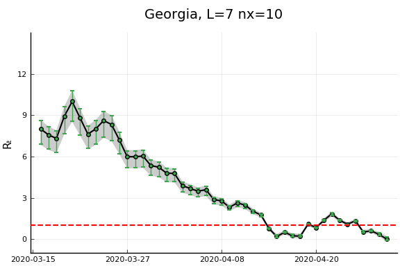
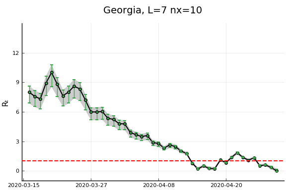


 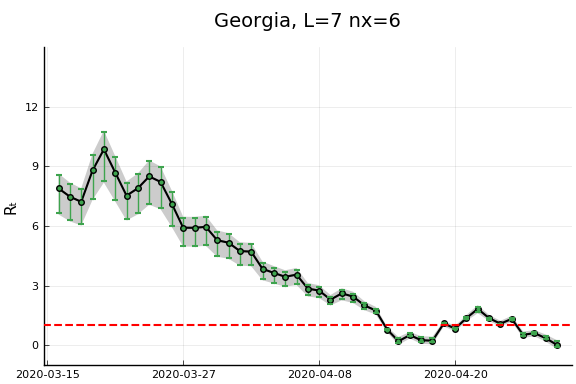
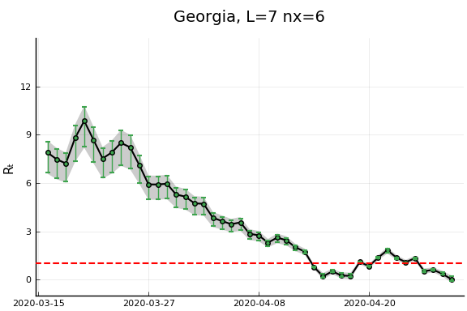 

 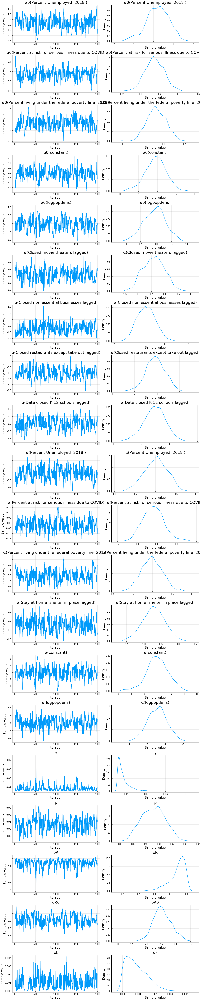
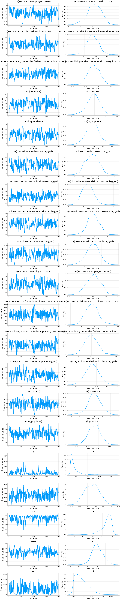


 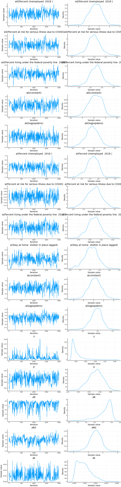
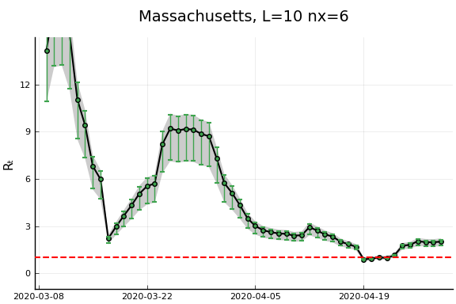
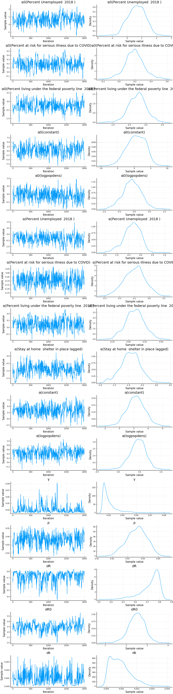
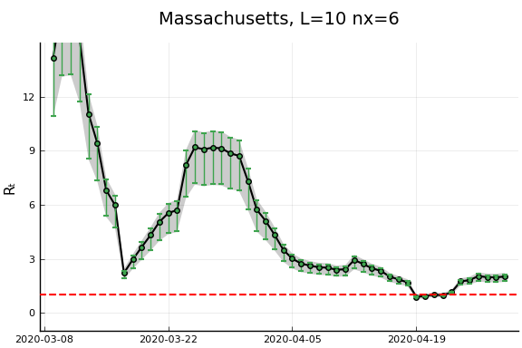 

 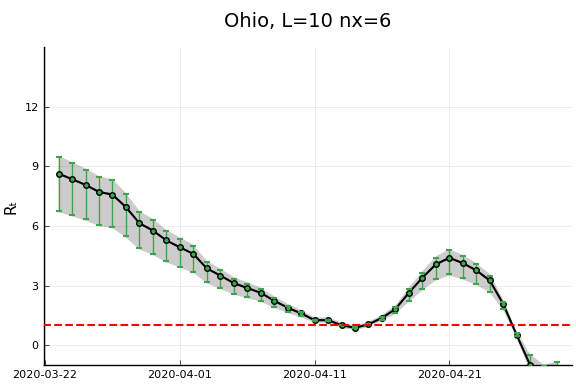
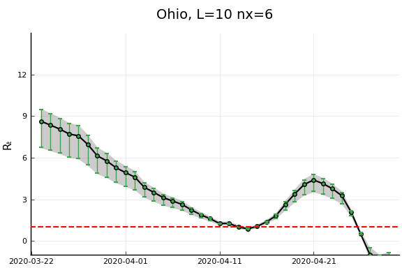


 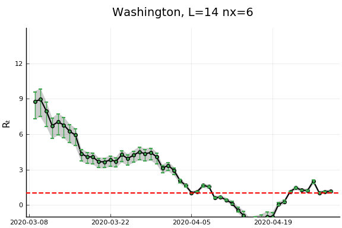
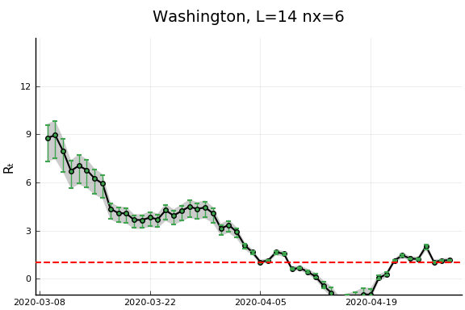